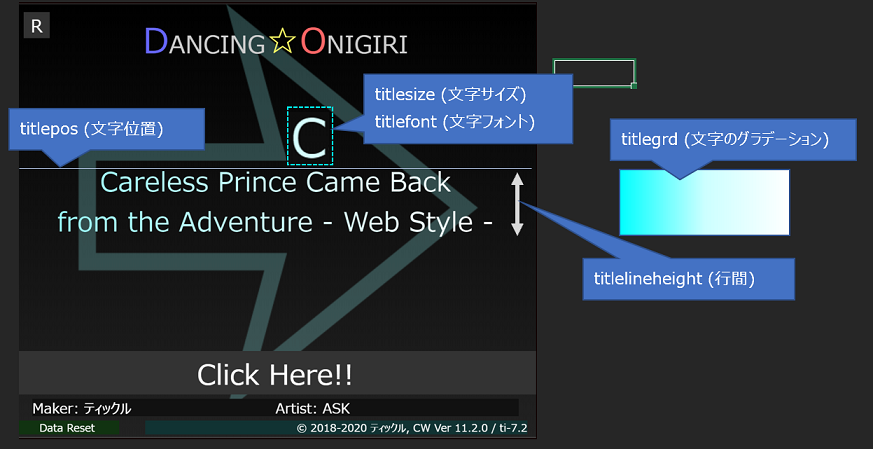

|titlegrd=#ff0000,#ff4500,#ffff00,#008000,#00ffff,#0000ff,#800080|
|titlegrd=to top right,#DDDD99,#ffff00|
|titlegrd=45deg,#DDDD99,#ffff00|
|titlegrd=0xffff99,0xffffff|
|titlegrd=180deg,#9999ff,#ffffff$180deg,#ffff66,#888888,#ff9999|
|titlegrd=90deg:#ffff99:#ffffff|
|titlearrowgrd=#ffff99:#ffffff@radial-gradient|
| 譜面ヘッダー | 内容 |
|---|---|
| titlegrd | 曲名文字のグラデーション |
| titlearrowgrd | 背景矢印のグラデーション |
デフォルトの曲名表示を使用した場合に、
タイトル文字(背景矢印)のグラデーションを設定できます。
カンマ区切りでいくつでも指定可能です。
ver5.1以降は、$区切りで2行目のグラデーションを指定できます。
ver12以降、コロン(:)区切りによるグラデーションに対応しています。
指定がない場合は、これまで通りsetColorの1番目・3番目の値が適用されます。
1つだけ色指定した場合、2つ目の色として#ffffffが自動補完されます。
グラデーションの方向を変えたい場合は、先頭に「45deg」「to top right」などをつけることで
変更することができます。
カラーコード指定が原則です。色名指定も可能ですが、意図しない動きになることがありますのでご注意ください。
(参考：Pull Request #223 )
customTitleUseがfalseに設定されているとき、この値は無視されます。

| Version | 変更内容 |
|---|---|
| v19.2.0 | ・titlearrowgrdについてRGBAのカラーコードに対応 |
| v12.0.0 | ・グラデーション記述に対応 |
| v5.1.0 | ・曲名表示の2行対応。 "$"区切りでそれぞれのグラデーションを指定できるように変更 |
| v3.2.0 | ・初回実装 |